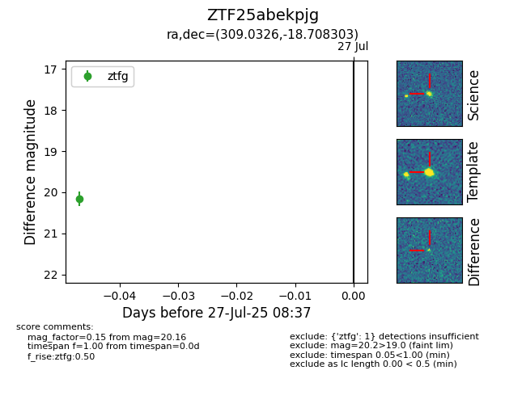

Target ZTF25abekpjg at 2025-07-27 08:37, see:
FINK: fink-portal.org/ZTF25abekpjg
Lasair: lasair-ztf.lsst.ac.uk/objects/ZTF25abekpjg
ALeRCE: alerce.online/object/ZTF25abekpjg
alt names
ZTF25abekpjg (ztf,fink)
coordinates:
equatorial (ra, dec) = (309.0326,-18.70830)
galactic (l, b) = (26.5576,-31.20328)
photometry
last ztfg=20.16
1 ztfg detections
